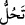

Kur’ân okumak şu baldan daha tatlı,
Kur’ân’ı tefsir etmek ise şu kıldan daha incedir.”
Hz. Ali de şöyle dedi:
“Misafir şu kaptan daha parlak,
Misafirin sözleri şu baldan daha tatlı,
Misâfirin kalbi şu kıldan daha incedir.”
Allah Teâlâ kalblerimizi irfân nûruyla nurlandırsın. Bizi ve sizi Kur’ân’ın sırrına
erdirsin. Âmîn, yâ Allah, yâ Rahmân.
“İman edenler hâlâ bilmediler mi ki, Allah dileseydi bütün insanları hidâyete
erdirirdi?” ve hepsi îman ederdi.
Ye’s, bir şeye tamah etmeği bırakmak ve ondan ümîd kesmek demektir. Ancak bazen
mecâzî olarak ‘bilmek’ mânâsında kullanılır. Çünkü yeis o şeyin artık olamayacağını
bilmekten dolayı oluşur.
Mânâ şu şekildedir: Îman edenler hâlâ bilmediler mi ki Allah Teâlâ, insanların
hepsini hidâyet etmez. Çünkü meşîeti/irâdesi herkesin hidâyete ermesine taalluk
etmemiştir. Cemâl ve celâli gereği dilediğine hidâyet ederken, dilediğini de saptırır.
Hâfız şöyle der:
Aşk dükkânında küfür lâzımdır
Ebû Leheb olmasa ateş kimi yakar
Rivâyete göre mü’minlerden bir topluluk: “Yâ Rasûlallah, şu kâfirlere cevap ver”
dediler. Belki inanırlar diye Mekke kâfirlerinin istediği mûcizeleri göstermesini
kastediyorlardı. İşte bunun üzerine Allah Teâlâ: Mûcizeleri gördükten sonra bu kadar
çok inat ettiklerini gördükleri halde bu kâfirlerin îman edeceklerinden ümitlerini
kesmediler mi?!” buyurmuş oluyor.” buyurdu.
“Allah’ın vaadi” olan ölümleri yahut kıyamet günü ya da Mekke’nin fethi “gelinceye
kadar inkâr edenlere,” Rahman’ı inkar eden Mekke kâfirlerine “yaptıklarından
dolayı” yani inkârları ve habis amelleri yüzünden “ya ansızın büyük bir belâ” yani,
hiç ummadıkları bir zamanda burunlarını sürtecek esâret, savaş, ölüm, kıtlık gibi bir
belâ “gelmeye devam edecek” Hulâsa Mekke kâfirleri birtakım belâlarla azâba duçar
olmaya devam edeceklerdir.
“Veya o belâ evlerinin” Mekke’nin “yakınına inecek” isâbet edecek ve bu sebeple
korkuya kapılacaklar, yurtlarından sökülüp atılacaklar, bu belânın kıvılcımları hepsini
birden yakacak, kötülükleri hepsini kaplayacak.
“ (inecek)” fiilinin Hz. Peygamber (a.s.)’a hitâb olması da câizdir. Buna göre
mânâ ‘Sen onların evlerinin yakınına ineceksin.’ olur. Çünkü O, ordusuyla beraber
Hudeybiye senesinde müşriklerin yurtlarının yakınında konaklamış ve mallarını ve